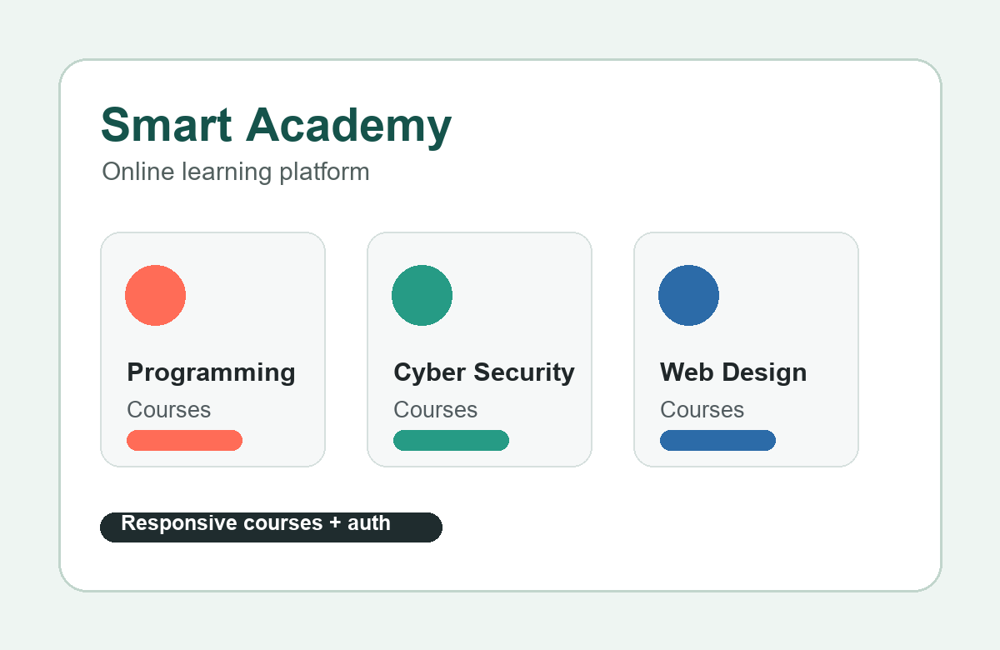
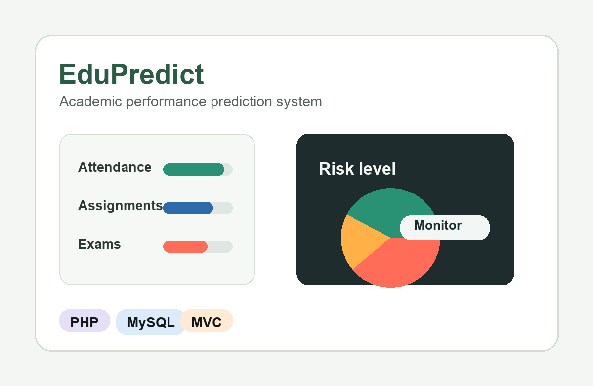
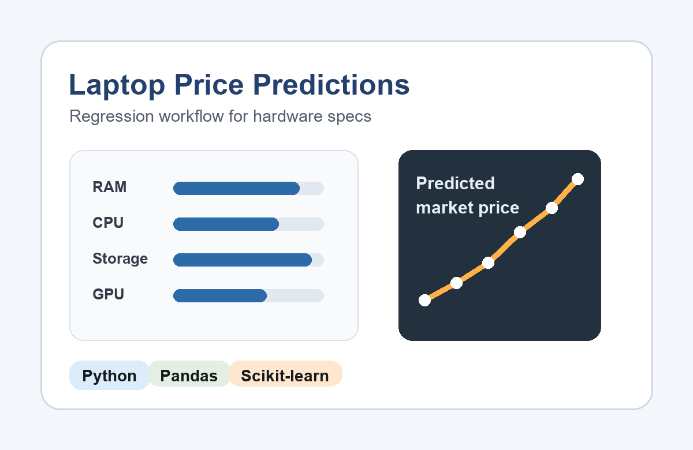
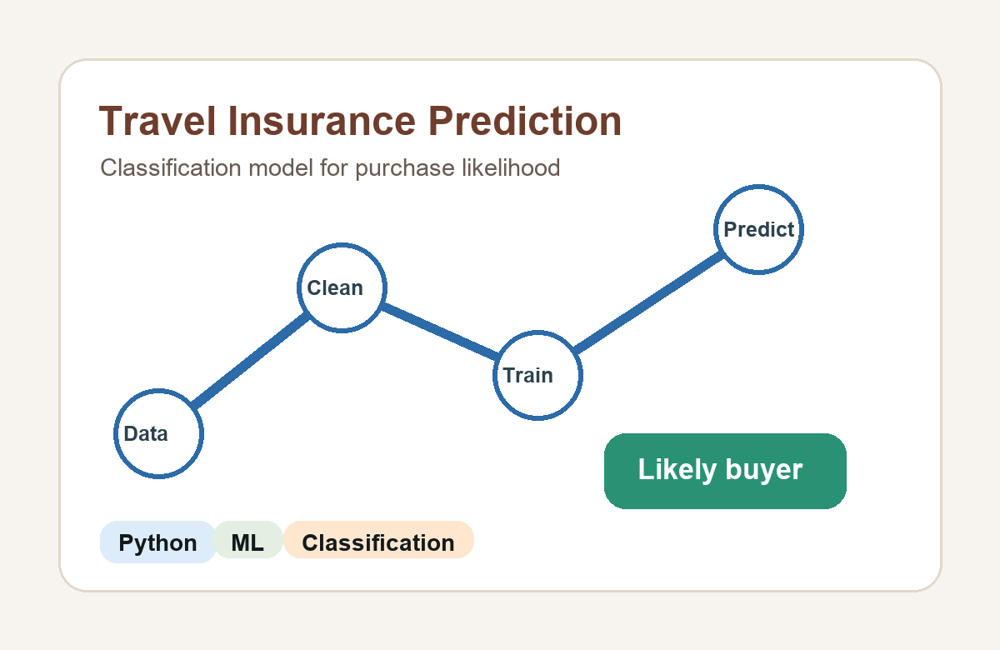

Smart Academy
JavaScriptA responsive online learning platform for programming and computer science courses, with structured course browsing and a cleaner learning interface.
View repositoryComputer Science Student - Cairo, Egypt
I am Osama Hamada, a Computer Science student at Misr International University focused on responsive web platforms, backend workflows, databases, and prediction models that turn raw data into useful decisions.
Selected Work
These projects show the range I am building: course platforms, PHP systems, and machine learning prediction workflows.

A responsive online learning platform for programming and computer science courses, with structured course browsing and a cleaner learning interface.
View repository
A web-based system for predicting academic performance and identifying risk levels using attendance and academic data, with backend logic, database design, and role-based access.
View repository
A regression project that estimates laptop prices from hardware specifications, using preprocessing, feature engineering, model training, and evaluation.
View repository
A classification workflow that predicts whether a customer is likely to purchase travel insurance using customer data, preprocessing, and model testing.
View repositoryCapabilities
My strongest current mix is web development, database-backed systems, and applied ML coursework.
C++, Java, Python, HTML, CSS, JavaScript, PHP
Front-end development, responsive design, MVC architecture, backend workflows
MySQL, database management systems, preprocessing, feature encoding
Git, GitHub, VS Code, Jira, OOP, data structures, algorithms, problem solving
Background
Misr International University, Cairo. Coursework and projects across programming, web systems, software engineering, and machine learning.
Bebusiness, Cairo. Worked on practical software development workflows while growing teamwork, communication, and problem-solving skills.
Google online event focused on AI tools, Google technologies, and practical applications of artificial intelligence.
Contact
I am interested in internships, junior software roles, and project work around web development, backend systems, and applied machine learning.